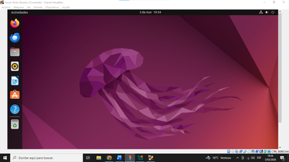
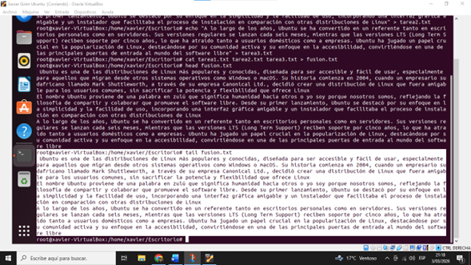
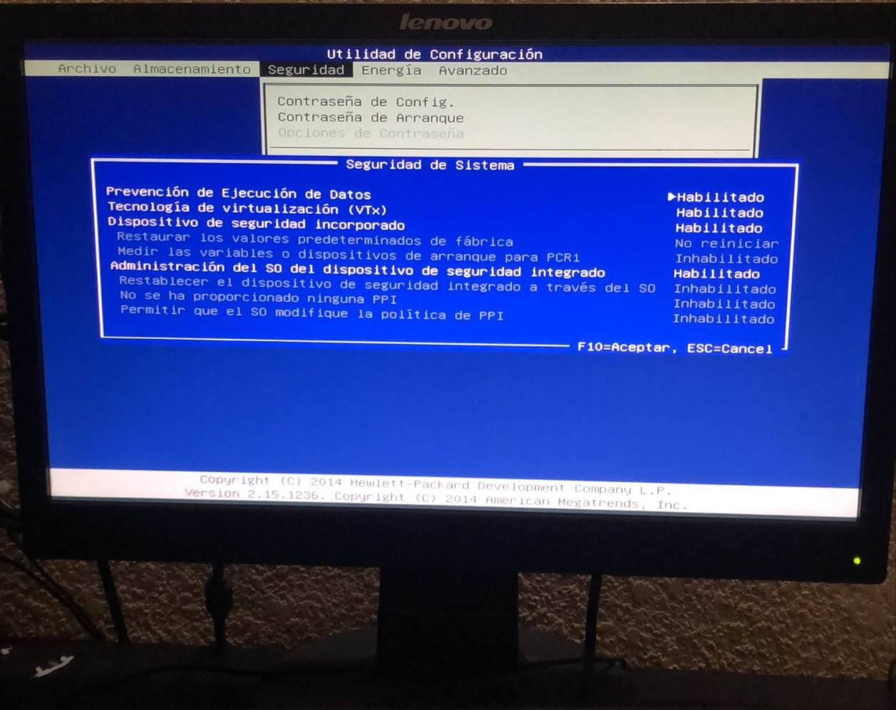

En este proyecto se realizó la instalación del sistema operativo Ubuntu en una máquina virtual utilizando VirtualBox, lo que permitió virtualizar el equipo sin afectar el sistema principal. Se descargó la imagen ISO de Ubuntu y se configuró la máquina virtual desde la BIOS y el software de virtualización. Durante el proceso se documentó la instalación con capturas de pantalla y posteriormente se utilizaron comandos en la terminal de Linux para la gestión de archivos y paquetes. Este proyecto permitió comprender el uso de sistemas operativos Linux, virtualización y administración básica desde la terminal.


